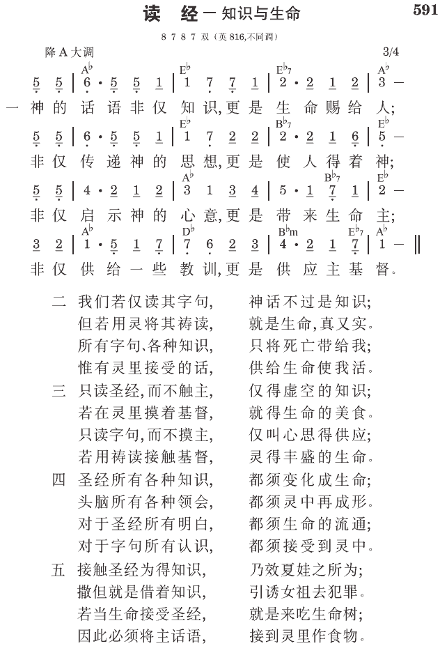

提后3:16 圣经都是神的呼出，对于教训、督责、改正、在义上的教导，都是有益的。
承先启后，进而更有所见
翻译圣经，历代是逐渐进步的。惯例总是承先启后，后者借助于先者，进而更有所见。圣经恢复本，乃以华语中最通行的国语和合本为参照，尽力保留其语体、节奏、以及人地名音译，各面的优美；并以英语中所有权威译本，以及华语中所有寻得的其他译本为参考，不但为得借鉴、启发，也为避免偏见、误断。凡较佳辞句，无不尽力采集，务求圣言中的启示，能在华语中，得到差异最少，达意最准的发表。
汇集各方圣徒对神圣启示的认识
翻译圣经，除基于对圣经原文之明了外，也在于对圣言中神圣启示的认识。历代圣徒对神圣启示的认识，也是基于他们所得之亮光，逐渐前进的。圣经恢复本所根据者，乃此类认识之集大成，加上附注，可谓二千年来，各方圣徒对神圣启示认识之结晶，希能继往又开来。
鉴定圣经原文古卷，乃翻译圣经之根据。最新发现，或为时最古之古卷，并非最为准确、可靠。任何一节或一段须考量之经文，均须根据其书及其章之上下文，并须比较其相同记载之经文，而作鉴定。圣经恢复本之古卷鉴定，即以此为原则。
圣经恢复本竭尽所能，探究原文精意，用中肯、浅顺之国语表达之。凡难照原文语气表达者，均加注解释。
圣经恢复本每卷书的主题、纲目，乃以史事为根据，并以灵意为发表。注解重于真理的启示、属灵的亮光、以及生命的供应，过于历史、地理和人物的解释。串珠不仅指引到相同的辞句与史事，更根据属灵的启示，指引到有关的事物和经言（新约圣经恢复本简说）。
参读：新旧约圣经恢复本经文版简介。
